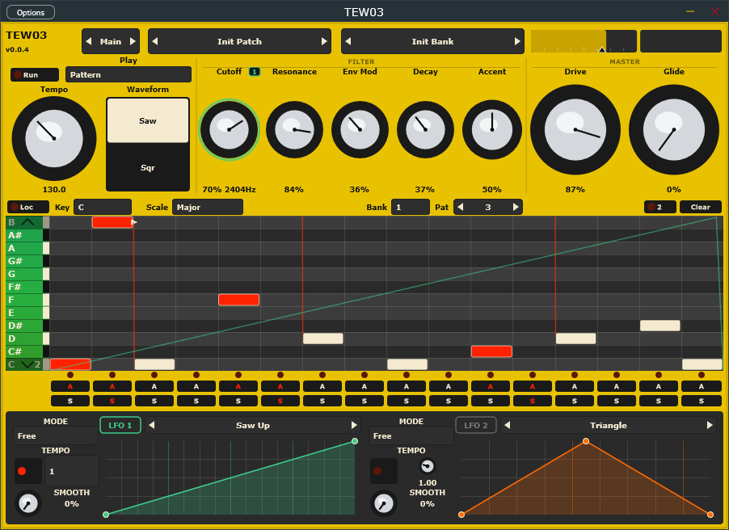
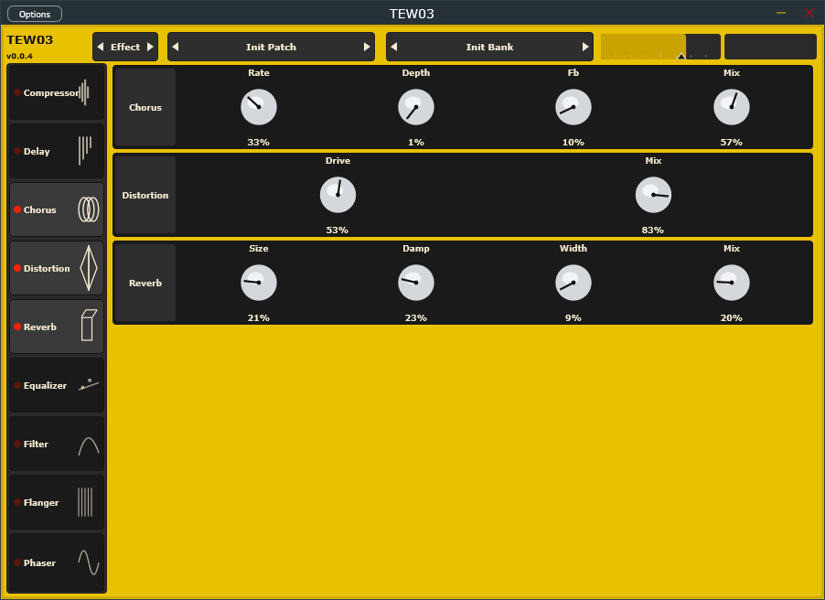
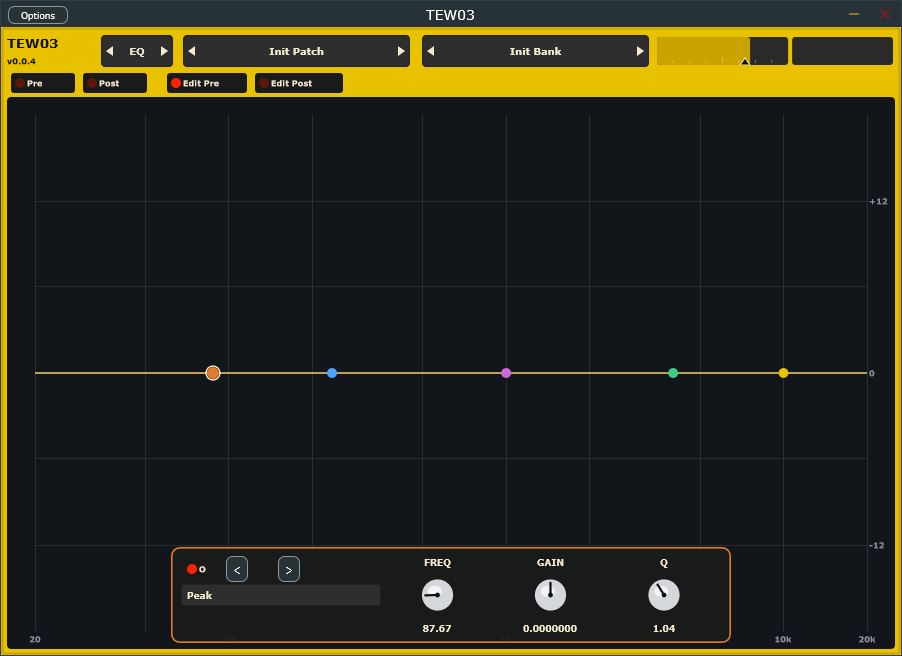

TEW03
A monophonic acid synth. Classic 303 squelch (saw/square, resonant filter, accent, slide, drive) plus extra nastiness.
Main
The synth, a 3×12 step sequencer (16 or 32 steps, accent and slide, key lock), and two drawn LFOs you can drop on any knob. Patterns play the voice and go out as MIDI.
LFO 1 LFO 2
- Keyboard — play it from MIDI.
- Pattern — loop the selected slot.
- Key — hold a key to trigger a pattern.

Effects
Chorus, compressor, delay, distortion, EQ, filter, flanger, phaser, reverb. Click to add, drag to reorder. All off until you turn them on.

EQ
Five-band parametric before and after the effects, with the spectrum behind the curve.
